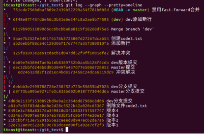

1. git简介
1.1 产生历史
git是目前世界上最先进的分布式版本控制系统。
Linus在1991年创建了开源的Linux，从此，Linux系统不断发展，已经成为最大的服务器系统软件了。Linus虽然创建了Linux，但Linux的壮大是靠全世界热心的志愿者参与的，这么多人在世界各地为Linux编写代码，那Linux的代码是如何管理的呢？事实是，在2002年以前，世界各地的志愿者把源代码文件通过diff的方式发给Linus，然后由Linus本人通过手工方式合并代码！你也许会想，为什么Linus不把Linux代码放到版本控制系统里呢？不是有CVS、SVN这些免费的版本控制系统吗？因为Linus坚定地反对CVS和SVN，这些集中式的版本控制系统不但速度慢，而且必须联网才能使用。有一些商用的版本控制系统，虽然比CVS、SVN好用，但那是付费的，和Linux的开源精神不符。不过，到了2002年，Linux系统已经发展了十年了，代码库之大让Linus很难继续通过手工方式管理了，社区的弟兄们也对这种方式表达了强烈不满，于是Linus选择了一个商业的版本控制系统BitKeeper，BitKeeper的东家BitMover公司出于人道主义精神，授权Linux社区免费使用这个版本控制系统。安定团结的大好局面在2005年就被打破了，原因是Linux社区牛人聚集，不免沾染了一些梁山好汉的江湖习气。开发Samba的Andrew试图破解BitKeeper的协议(这么干的其实也不只他一个)，被BitMover公司发现了(监控工作做得不错！)，于是BitMover公司怒了，要收回Linux社区的免费使用权。Linus可以向BitMover公司道个歉，保证以后严格管教弟兄们，嗯，这是不可能的。实际情况是这样的：Linus花了两周时间自己用C写了一个分布式版本控制系统，这就是Git！一个月之内，Linux系统的源码已经由Git管理了！牛是怎么定义的呢？大家可以体会一下。Git迅速成为最流行的分布式版本控制系统，尤其是2008年，GitHub网站上线了，它为开源项目免费提供Git存储，无数开源项目开始迁移至GitHub，包括jQuery，PHP，Ruby等等。历史就是这么偶然，如果不是当年BitMover公司威胁Linux社区，可能现在我们就没有免费而超级好用的Git了。
Git和svn的区别https://www.cnblogs.com/dazhidacheng/p/7478438.html
1.2 git的两大特点
l 版本控制：可以解决多人同时开发的代码问题，也可以解决找回历史代码的问题。
l 分布式：Git是分布式版本控制系统，同一个Git仓库，可以分布到不同的机器上。首先找一台电脑充当服务器的角色，每天24小时开机，其他每个人都从这个“服务器”仓库克隆一份到自己的电脑上，并且各自把各自的提交推送到服务器仓库里，也从服务器仓库中拉取别人的提交。可以自己搭建这台服务器，也可以使用GitHub网站。
2. 安装与配置
(1) 安装命令如下：
sudo apt-get install git
(2) 安装成功后，运行如下命令:
git
3. 创建一个版本库
(1) 新建一个目录git_test，在git_test目录下创建一个版本库，命令如下：
git init
可以看到在git_test目录下创建了一个.git隐藏目录，这就是版本库目录。
4. 版本创建与回退
4.1 使用
(1) 在git_test目录下创建一个文件code.txt，编辑内容如下：
(2) 使用如下两条命令可以创建一个版本：
git add code.txt
git commit –m '版本1'
添加身份标识（git不做检查）
git config --global user.email "you@example.com"
git config --global user.name "Your Name"
然后再执行git commit -m ‘版本一’
(3) 使用如下命令可以查看版本记录：
git log
(4) 继续编辑code.txt，在里面增加一行。
(5) 使用如下命令再创建一个版本并查看版本记录：

(6) 现在若想回到某一个版本，可以使用如下命令：
git reset --hard HEAD^
其中HEAD表示当前最新版本，HEAD^表示当前版本的前一个版本,HEAD^^表示当前版本的前前个版本，也可以使用HEAD~1表示当前版本的前一个版本,HEAD~100表示当前版本的前100版本。
现在若觉得想回到版本1，可以使用如下命令：
执行命令后使用git log查看版本记录，发现现在只能看到版本1的记录，cat code.txt查看文件内容，现在只有一行，也就是第一个版本中code.txt的内容。
(7) 假如我们现在又想回到版本2，这个时候怎么办？
可以使用如下命令：
git reset --hard 版本号
从上面可以看到版本2的版本号为：
(8) 在终端执行如下命令：
现在发现版本2有回来了。可以cat code.txt查看其里面的内容
(9) 假如说上面的终端已经关了改怎么回退版本。
我们在执行如下命令将版本回退到版本1。
下面把终端关了，然后再打开终端，发现之前版本2的版本号看不到了。
那么怎么再回到版本2呢？git reflog命令可以查看我们的操作记录。
git reflog
可以看到版本2的版本号，我们再使用如下命令进行版本回退，版本重新回到了版本2。
4.2 工作区和暂存区
4.2.1 工作区(Working Directory)
电脑中的目录，比如我们的git_test，就是一个工作区。
4.2.2 版本库(Repository)
工作区有一个隐藏目录.git，这个不是工作区，而是git的版本库。
git的版本库里存了很多东西，其中最重要的就是称为index(或者叫stage)的暂存区，还有git为我们自动创建的第一个分支master，以及指向master的一个指针叫HEAD。
因为我们创建git版本库时，git自动为我们创建了唯一一个master分支，所以，现在，git commit就是往master分支上提交更改。
你可以简单理解为，需要提交的文件修改通通放到暂存区，然后，一次性提交暂存区的所有修改。
前面讲了我们把文件往git版本库里添加的时候，是分两步执行的：
第一步是用git add把文件添加进去，实际上就是把文件修改添加到暂存区；
第二步是用git commit提交更改，实际上就是把暂存区的所有内容提交到当前分支。
(1) 下面在git_test目录下再创建一个文件code2.txt，然后编辑内容如下：
(2) 然后再次编辑code.txt内容，在其中加入一行，编辑后内容如下：
(3) 使用如下命令查看当前工作树的状态：
git status

上面提示我们code.txt被修改，而code2.txt没有被跟踪。
(4) 我们使用如下命令把code.txt和code2.txt加入到暂存区，然后再执行git status命令，结果如下：
所有git add命令是把所有提交的修改存放到暂存区。
(5) 然后，执行git commit就可以一次性把暂存区的所有修改提交到分支创建一个版本。
(6) 一旦提交后，如果你又没有对工作区做任何修改，那么工作区就是“干净”的。执行如下命令可以发现：
现在我们的版本库变成了这样：

4.3 管理修改
git管理的文件的修改，它只会提交暂存区的修改来创建版本。
(1) 编辑code.txt，并使用git add 命令将其添加到暂存区中。
(2) 继续编辑code.txt，并在其中添加一行。
(3) git commit创建一个版本，并使用git status查看，发现第二次修改code.txt内容之后，并没有将其添加的工作区，所以创建版本的时候并没有被提交。
4.4 撤销修改
(1) 继续上面的操作，提示我们可以使用 git checkout -- <文件> 来丢弃工作区的改动。执行如下命令，发现工作区干净了，第二次的改动内容也没了。
(2) 我们继续编辑code.txt，并在其中添加如下内容，并将其添加的暂存区。
(3)git同样告诉我们，用命令git reset HEAD file可以把暂存区的修改撤销掉，重新放回工作区。

(4)现在若想丢弃code.txt的修改，执行如下命令即可。
现在，如果你不但改错了东西，还从暂存区提交到了版本库，则需要进行版本回退。
小结：
场景1：当你改乱了工作区某个文件的内容，想直接丢弃工作区的修改时，用命令git checkout -- file。
场景2：当你不但改乱了工作区某个文件的内容，还添加到了暂存区时，想丢弃修改，分两步，第一步用命令git reset HEAD file，就回到了场景1，第二步按场景1操作。
场景3：已经提交了不合适的修改到版本库时，想要撤销本次提交，参考版本回退一节。Git reset –hard 版本号
4.5 对比文件的不同
对比工作区和某个版本中文件的不同：
(1) 继续编辑文件code.txt，在其中添加一行内容。
(2) 现在要对比工作区中code.txt和HEAD版本中code.txt的不同。使用如下命令：
Git diff HEAD – 文件名
(3) 使用如下命令丢弃工作区的改动。
对比两个版本间文件的不同：
(1) 现在要对比HEAD和HEAD^版本中code.txt的不同，使用如下命令：
Git diff HEAD HEAD^ -- code.txt

4.6 删除文件
(1) 我们把目录中的code2.txt删除。
这个时候，git知道删除了文件，因此，工作区和版本库就不一致了，git status命令会立刻提示哪些文件被删除了。

(2) 现在你有两个选择，一是确实要从版本库中删除该文件，那就用命令git rm删掉，并且git commit：
另一种情况是删错了，可以直接使用git checkout – code2.txt,这样文件code2.txt又回来了。
小结：
命令git rm用于删除一个文件。如果一个文件已经被提交到版本库，那么你永远不用担心误删，但是要小心，你只能恢复文件到最新版本，你会丢失最近一次提交后你修改的内容。
5. 分支管理
5.1 概念
分支就是科幻电影里面的平行宇宙，当你正在电脑前努力学习Git的时候，另一个你正在另一个平行宇宙里努力学习SVN。
如果两个平行宇宙互不干扰，那对现在的你也没啥影响。不过，在某个时间点，两个平行宇宙合并了，结果，你既学会了git又学会了SVN！
分支在实际中有什么用呢？假设你准备开发一个新功能，但是需要两周才能完成，第一周你写了50%的代码，如果立刻提交，由于代码还没写完，不完整的代码库会导致别人不能干活了。如果等代码全部写完再一次提交，又存在丢失每天进度的巨大风险。
现在有了分支，就不用怕了。你创建了一个属于你自己的分支，别人看不到，还继续在原来的分支上正常工作，而你在自己的分支上干活，想提交就提交，直到开发完毕后，再一次性合并到原来的分支上，这样，既安全，又不影响别人工作。
5.2 创建与合并分支
git把我们之前每次提交的版本串成一条时间线，这条时间线就是一个分支。截止到目前只有一条时间线，在git里，这个分支叫主分支，即master分支。HEAD严格来说不是指向提交，而是指向master，master才是指向提交的，所以，HEAD指向的就是当前分支。
(1) 一开始的时候，master分支是一条线，git用master指向最新的提交，再用HEAD指向master，就能确定当前分支，以及当前分支的提交点：
每次提交，master分支都会向前移动一步，这样，随着你不断提交，master分支的线也越来越长。
(2)当我们创建新的分支，例如dev时，git新建了一个指针叫dev，指向master相同的提交，再把HEAD指向dev，就表示当前分支在dev上：
git创建一个分支很快，因为除了增加一个dev指针，改变HEAD的指向，工作区的文件都没有任何变化。
(3)不过，从现在开始，对工作区的修改和提交就是针对dev分支了，比如新提交一次后，dev指针往前移动一步，而master指针不变：

(4)假如我们在dev上的工作完成了，就可以把dev合并到master上。git怎么合并呢？最简单的方法，就是直接把master指向dev的当前提交，就完成了合并：

git合并分支也很快，就改改指针，工作区内容也不变。
(5)合并完分支后，甚至可以删除dev分支。删除dev分支就是把dev指针给删掉，删掉后，我们就剩下了一条master分支：
案例：
(1)执行如下命令可以查看当前有几个分支并且看到在哪个分支下工作。
(2)下面创建一个分支dev并切换到其上进行工作。
(3)下面我们修改code.txt内容，在里面添加一行，并进行提交。

(4)dev分支的工作完成，我们就可以切换回master分支：
查看code.txt，发现添加的内容没有了。因为那个提交是在dev分支上，而master分支此刻的提交点并没有变：
(5)现在，我们把dev分支的工作成果合并到master分支上：
git merge命令用于合并指定分支到当前分支。合并后，再查看code.txt的内容，就可以看到，和dev分支的最新提交是完全一样的。
注意到上面的Fast-forward信息，Git告诉我们，这次合并是“快进模式”，也就是直接把master指向dev的当前提交，所以合并速度非常快。
(6)合并完成后，就可以放心地删除dev分支了，删除后，查看branch，就只剩下master分支了。


小结：
查看分支：git branch
创建分支：git branch <name>
切换分支：git checkout <name>
创建+切换分支：git checkout -b <name>
合并某分支到当前分支：git merge <name>
删除分支：git branch -d <name>
5.3 解决冲突
合并分支往往也不是一帆风顺的。
(1)再创建一个新分支dev。
(2)修改code.txt内容，并进行提交。

(3)切换回master分支。
(4)在master的code.txt添加一行内容并进行提交。
现在，master分支dev分支各自都分别有新的提交，变成了这样：
这种情况下，git无法执行“快速合并”，只能试图把各自的修改合并起来，但这种合并就可能会有冲突。
(5)执行如下命令尝试将dev分支合并到master分支上来。
git告诉我们，code.txt文件存在冲突，必须手动解决冲突后再提交。
(6)git status也可以告诉我们冲突的文件：
(7)查看code.txt的内容。
(8)git用<<<<<<<，=======，>>>>>>>标记出不同分支的内容，我们修改如下后保存：
(10) 再提交。
(11) 现在，master分支和dev分支变成了下图所示：
(11)用带参数的git log也可以看到分支的合并情况：
(12)最后工作完成，可以删除dev分支。
5.4 分支管理策略
通常，合并分支时，如果可能，git会用fast forward模式，但是有些快速合并不能成功而且合并时没有冲突，这个时候会合并之后并做一次新的提交。但这种模式下，删除分支后，会丢掉分支信息。
(1)创建切换到dev分支下。
(2)新建一个文件code3.txt编辑内容如下，并提交一个commit。
(3)切换回master分支，编辑code.txt并进行一个提交。
(4)合并dev分支的内容到master分支。
(5)出现如下提时，这是因为这次不能进行快速合并，所以git提示输入合并说明信息，输入之后合并内容之后git会自动创建一次新的提交。
(6)使用分支命令查看分支信息。
(7)删除dev分支。
如果要强制禁用fast forward模式，git就会在merge时生成一个新的commit，这样，从分支历史上就可以看出分支信息。
(1)创建并切换到dev分支。
(2)修改code.txt内容，并提交一个commit。
(3)切换回master分支。
(4)准备合并dev分支，请注意--no-ff参数，表示禁用Fast forward：
因为本次合并要创建一个新的commit，所以加上-m参数，把commit描述写进去。
(5)合并后，我们用git log看看分支历史：
可以看到，不使用Fast forward模式，merge后就像这样：

5.5 Bug分支
软件开发中，bug就像家常便饭一样。有了bug就需要修复，在git中，由于分支是如此的强大，所以，每个bug都可以通过一个新的临时分支来修复，修复后，合并分支，然后将临时分支删除。
(1)当你接到一个修复一个代号001的bug的任务时，很自然地，你想创建一个分支bug-001来修复它，但是，等等，当前正在dev上进行的工作还没有提交：
并不是你不想提交，而是工作只进行到一半，还没法提交，预计完成还需1天时间。但是，必须在两个小时内修复该bug，怎么办？
(2)git还提供了一个stash功能，可以把当前工作现场“储藏”起来，等以后恢复现场后继续工作：
(3)首先确定要在哪个分支上修复bug，假定需要在master分支上修复，就从master创建临时分支：
(4)现在修复bug,把 最后一行删掉，然后提交。
(5)修复完成后，切换到master分支，并完成合并，最后删除bug-001分支。
(7) 现在bug-001修复完成，是时候回到dev分支接着干活了！
(8) 工作区是干净的，刚才的工作现场存到哪去了？用git stash list命令看看：
作业现场还在，git把stash内容存在某个地方了，但是需要恢复一下.
小结：
修复bug时，我们会通过创建新的bug分支进行修复，然后合并，最后删除；
当手头工作没有完成时，先把工作现场git stash一下，然后去修复bug，修复后，再git stash pop，恢复工作现场。
6. 使用github
首先你要现有一个github账户，打开github网站地址https://github.com/去注册一个账号，注册完成之后登陆
6.1 创建仓库
(1)注册github账户，登录后，点击"New respository "
(2)在新页面中，输入项目的名称，勾选'readme.md'，点击'create repository'
(3)添加成功后，转到文件列表页面.
6.2 添加ssh账户
(1)点击账户头像后的下拉三角，选择'settings'
如果某台机器需要与github上的仓库交互，那么就要把这台机器的ssh公钥添加到这个github账户上

点击'SSH and GPG keys'，添加ssh公钥。
(2)在ubuntu的命令行中，回到用户的主目录下，编辑文件.gitconfig，修改某台机器的git配置。
(3)修改为注册github时的邮箱，填写用户名。
(4)使用如下命令生成ssh密钥。
ssh-keygen -t rsa -C "邮箱地址"
(5)进入主目录下的.ssh文件件，下面有两个文件。
公钥为id_rsa.pub
私钥为id_rsa
查看公钥内容，复制此内容
(6)回到浏览器中，填写标题，粘贴公钥
6.3 克隆项目
(1)在浏览器中点击进入github首页，再进入项目仓库的页面
(2)复制git地址
(3)在命令行中复制仓库中的内容
6.4 上传分支
(1)项目克隆到本地之后，进入test目录，创建一个分支.
(2)创建一个文件提交。

(3)推送前github上文件列表如下图
(4)推送前github上分支列表如下图
(5)推送分支，就是把该分支上的所有本地提交推送到远程库，推送时要指定本地分支，这样，git就会把该分支推送到远程库对应的远程分支上
git push origin 分支名称
例：
git push origin ttsx
(6)再去github网站上去看分支页面，内容如下。
6.5 将本地分支跟踪服务器分支
git branch --set-upstream-to=origin/远程分支名称 本地分支名称
例：
git branch --set-upstream-to=origin/ttsx ttsx
6.6 从远程分支上拉取代码
git pull origin 分支名称
例：
git pull origin ttsx
使用上述命令会把远程分支smart上的代码下载并合并到本地所在分支。
7. 工作使用git
项目经理：
(1) 项目经理搭建项目的框架。
(2) 搭建完项目框架之后，项目经理把项目框架代码放到服务器。
普通员工：
(1) 在自己的电脑上，生成ssh公钥，然后把公钥给项目经理，项目经理把它添加的服务器上面。
(2) 项目经理会给每个组员的项目代码的地址，组员把代码下载到自己的电脑上。
(3) 创建本地的分支dev,在dev分支中进行每天的开发。
(4) 每一个员工开发完自己的代码之后，都需要将代码发布远程的dev分支上。
Master:用户保存发布的项目代码。V1.0,V2.0
Dev:保存开发过程中的代码。